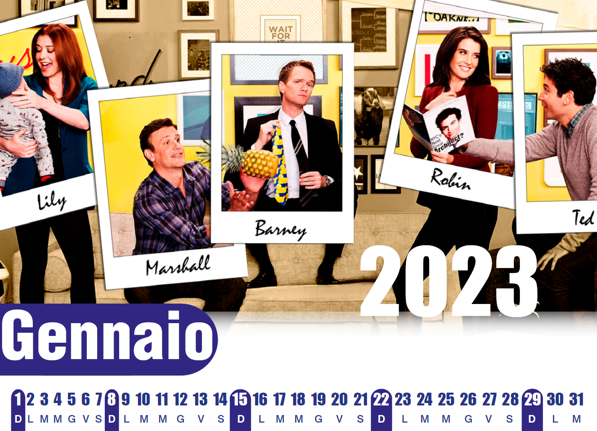
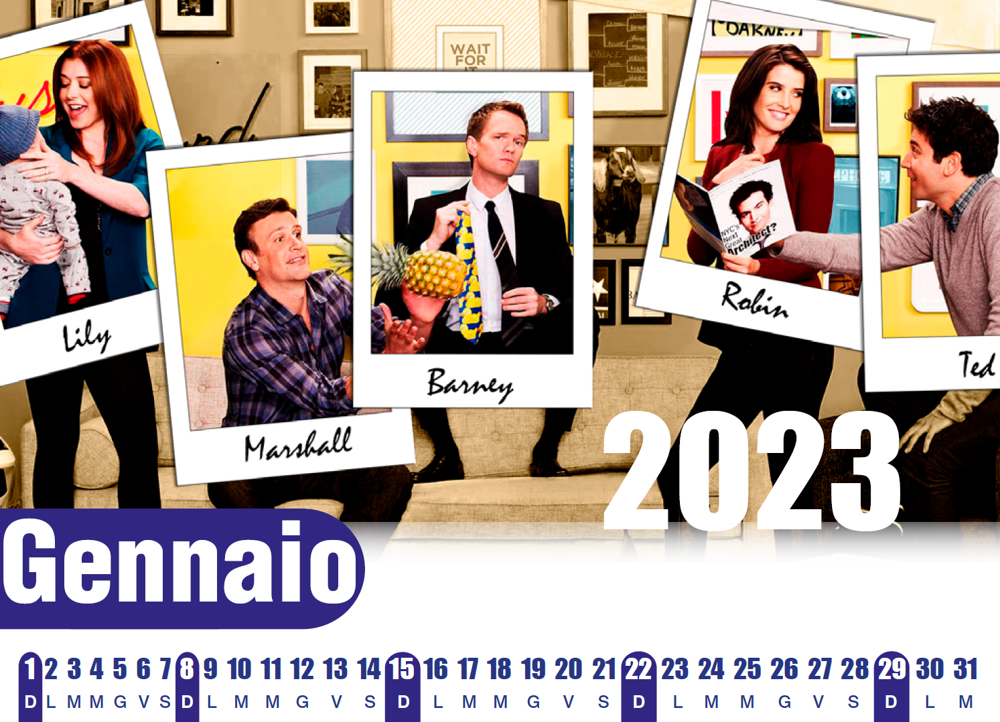
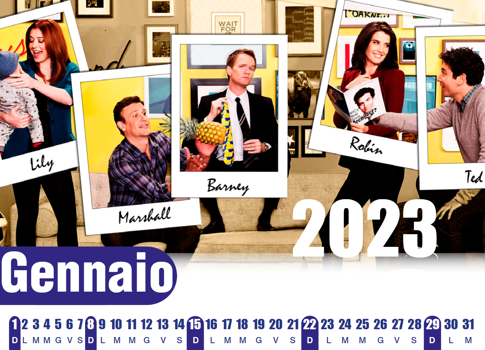
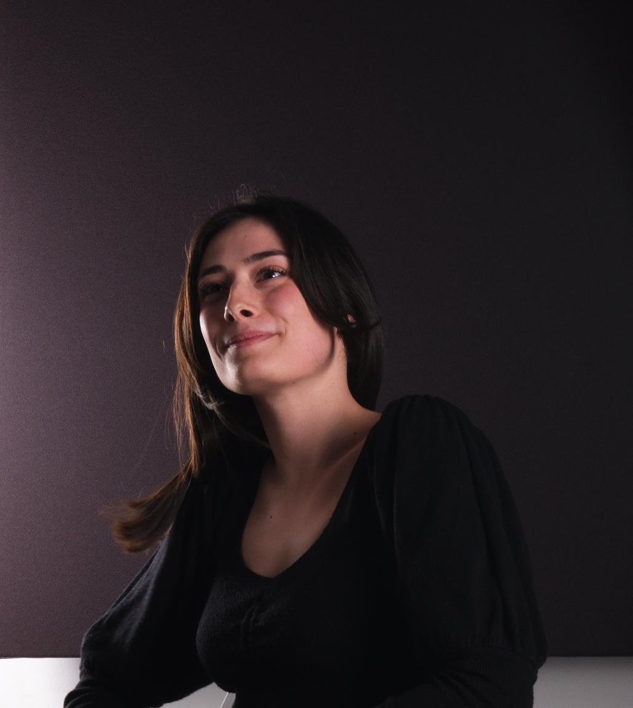
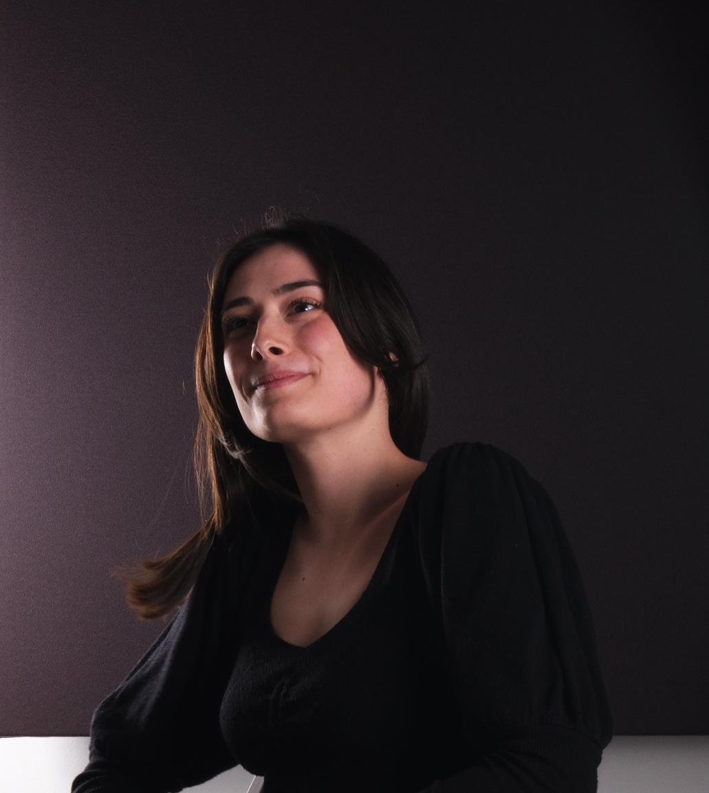

Una serie di foto e scene di How i met your mother ritoccate per formare un calendario
Jacopo Stelli Lamberto
FOTOMONTAGGIO ED EDITORIA

Una serie di foto e scene di How i met your mother ritoccate per formare un calendario
SCATTI VARI
 

Due ritratti che catturano uno, il sorriso contagioso di una giovane donna, l’altro lo sguardo sognante di un ragazzo
SCATTI IN STUDIO


Sicuri che siano solo oggetti fermi a me sembrano muoversi, raccontare storie e molto altro...
SCATTI ARTISTICI


Una stazione ferroviaria abbandonata dove la natura reclama il suo spazio alternandosi al creato dell’uomo